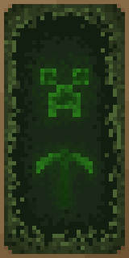
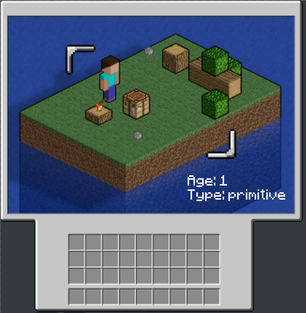
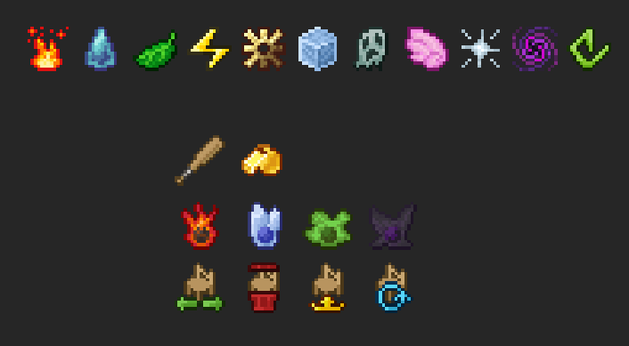
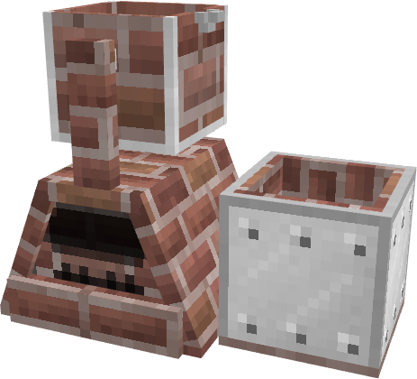
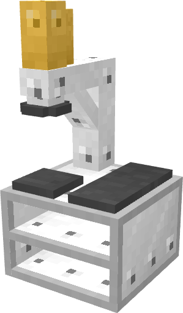
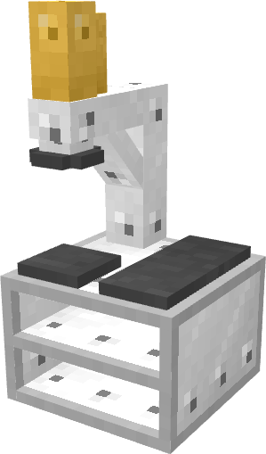
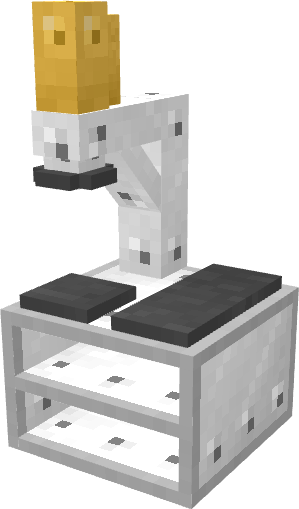

Welcome to my portfolio!
You can mess with my name little fellas, i dont really care.
Okay, i translate it, but only for you english speaking guys... its [Lezly Gaming] or [Lazlo Gaming]... but mainly i use "Laz The Artist" for basically anything if its not hungarian stuff.
So please call me Laz, because its what i prefer instead of you trying to say/spell my name with your weird english accent :3
Also im the founder/leader of MultiTeam minecraft modding group, which you can find here: Link
You still want more of me? Here you go.. Im a 17 year old boy from Hungary who just likes to create stuff.
But dont let this all trick you, im in middle school, where i study electronic engineering. Yes, i never studied art/graphic design, but im still good at it.
Okay, i translate it, but only for you english speaking guys... its [Lezly Gaming] or [Lazlo Gaming]... but mainly i use "Laz The Artist" for basically anything if its not hungarian stuff.
So please call me Laz, because its what i prefer instead of you trying to say/spell my name with your weird english accent :3
Also im the founder/leader of MultiTeam minecraft modding group, which you can find here: Link
You still want more of me? Here you go.. Im a 17 year old boy from Hungary who just likes to create stuff.
But dont let this all trick you, im in middle school, where i study electronic engineering. Yes, i never studied art/graphic design, but im still good at it.
My Artwork:
Im a (maybe) good artist, with 3 years of experience from working on different Minecraft mods.
As the time passed, i learned more and more. And because i was using Adobe Photoshop to make my textures, i was getting more and more interested in graphical design too, thats why this webpage is sooo beautiful.
I mainly use Adobe programs, so im familiar (other than photoshop) with Premiere, After Effects, XD (this is not a text emoji, google it up) and not that much but Illustrator. Outside of Adobe, i have an expert certificate in Autodesk Autocad.
Not mainly art related, but i can make websites, mainly html/css, but barely know javascript.
One important thing to know about my art, is that i can adapt to any sytle. ANY STYLE!
But i dont want to steal more time from you, lets see the examples of my Artwork:
As the time passed, i learned more and more. And because i was using Adobe Photoshop to make my textures, i was getting more and more interested in graphical design too, thats why this webpage is sooo beautiful.
I mainly use Adobe programs, so im familiar (other than photoshop) with Premiere, After Effects, XD (this is not a text emoji, google it up) and not that much but Illustrator. Outside of Adobe, i have an expert certificate in Autodesk Autocad.
Not mainly art related, but i can make websites, mainly html/css, but barely know javascript.
One important thing to know about my art, is that i can adapt to any sytle. ANY STYLE!
But i dont want to steal more time from you, lets see the examples of my Artwork:
Pixel Art (for Minecraft):
 


The paintings are one of my best works, i like them a lot. They was made for Multicraft
The paintings are one of my best works, i like them a lot. They was made for Multicraft

This is a bigger piece, a pack of blocks. there you can find some burnt stuff, bloody stuff, lava stones, and 3 set of woods. This pack was made for DragonFire.
 
And yes. I can make GUIs too. The top one is from FactoryAutomation, and its for the upcoming ages ui. The bottom one is a really new work, it has been made for the project "ElePets"
And yes. I can make GUIs too. The top one is from FactoryAutomation, and its for the upcoming ages ui. The bottom one is a really new work, it has been made for the project "ElePets"
These are icons, not items. They were made for Elepets (top row) and a workshop map (last 3 rows)

This is a "render" from one of my upcoming resorce-packs, this one will "jappafy" the old IndustrialCraft2 textures. Jappafy is a word which means something like appalying the jappa style(=vanilla style) on its textures (jappa is the guy who made the new (1.14) textures for minecraft)
  

I also shouldn't forget about showing the modeling skill i have, its important too.
They are (from top to bottom) Tier 2 foundry from FactoryAutomation, SantaFe diesel train from LittleTrains (which is discontinued atm), coin press from FactoryAutomation
 I also shouldn't forget about showing the modeling skill i have, its important too.
They are (from top to bottom) Tier 2 foundry from FactoryAutomation, SantaFe diesel train from LittleTrains (which is discontinued atm), coin press from FactoryAutomation
Other art related:

This is "Discord Neon" or "NeonCord" for short, a discord ui design, which at some point want to make as useable Better Discord Theme. I have an obsession with neon things... i just, love them.


These are part of my game's user interface, called ProjectFreedom. In order from top to bottom: Main menu, Settings menu interface settings, Settings menu control settings